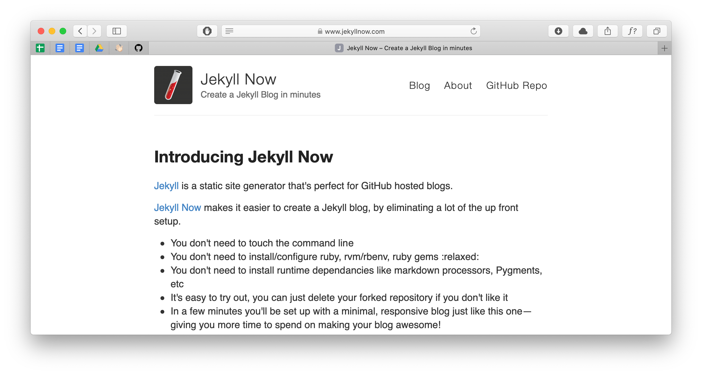

Jekyll NowTechnology
The first thing to stand out in this website is that it works using github pages, powered by Jekyll, a flat file website generator. You probably have heard about flat file cms, and static website generators and their advantages. Simple, fast and easy to deploy.
Checklist for the new website
- A simple way to publish content (a blog!), and Jekyll Now offers just that.
- Decoupled theming system that allows me to change the website design without affecting the content.
- Simple hosting, since I don’t need much space, database or dynamic content I didn’t want to deal with web hosting services and the monthly cost.
What’s next
I hope to publish blog posts about UX design, side projects and any resources I found could be useful for the rest of the community.
So if you are reading this, let me know your thoughts.